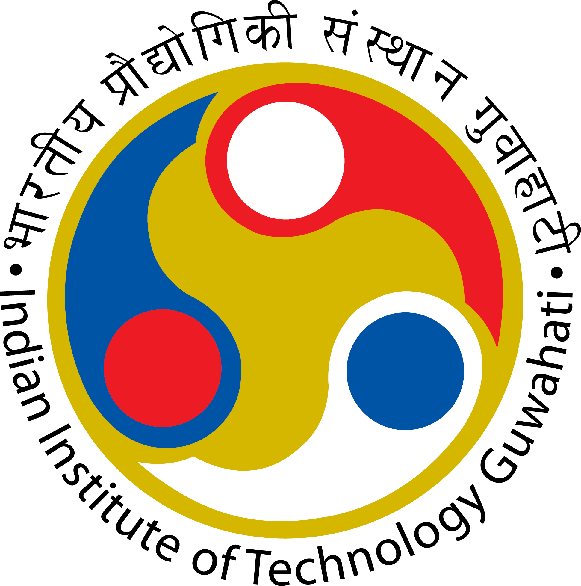

I am a systems engineer at Quadeye, a leading HFT based in India, where I work on building and optimizing
systems that trade across exchanges and asset classes.
I use modern C++ features, ultra-low latency network programming, and system design for the same.
I graduated with a B.Tech in Mathematics and Computing from IIT Guwahati, India in 2020. For more details, check my CV or hit me up on my email.
I did my bachelor thesis on construction of a sparsely connected hierarchical neural network. I was advised by Dr. Shreemayee Bora and Dr. Prithwijit Guha .
I also interned at Samsung Research, Bangalore where i worked with Samsung Neural Accelator Platform(SNAP) team to efficiently run PyTorch models on custom hardware.
I co-founded ARLE (autonomous robot for library enhancement) in my second year with 4 of my friends under 4i initiative of IITG. We worked on making a bot capable of navigating the library and keeping the book at correct possible. During my time we were successful in making a POC bot having features like SLAM, recognising the rack from book RFID and navigating library autonomously based on just book information.
I also co-founded a platform Carca to have intellectual conversations and discussions. Moreover, to become a medium facilitating the spread of knowledge over misinformation, benign social behavior over toxicity, and bringing people together in the time of the pandemic.
My interest lies in distributed systems, networks, deep reinforcement learning and autonomous systems. Check out the projects and blogs section to know more. Always up for having discussions about it.
I graduated with a B.Tech in Mathematics and Computing from IIT Guwahati, India in 2020. For more details, check my CV or hit me up on my email.
I did my bachelor thesis on construction of a sparsely connected hierarchical neural network. I was advised by Dr. Shreemayee Bora and Dr. Prithwijit Guha .
I also interned at Samsung Research, Bangalore where i worked with Samsung Neural Accelator Platform(SNAP) team to efficiently run PyTorch models on custom hardware.
I co-founded ARLE (autonomous robot for library enhancement) in my second year with 4 of my friends under 4i initiative of IITG. We worked on making a bot capable of navigating the library and keeping the book at correct possible. During my time we were successful in making a POC bot having features like SLAM, recognising the rack from book RFID and navigating library autonomously based on just book information.
I also co-founded a platform Carca to have intellectual conversations and discussions. Moreover, to become a medium facilitating the spread of knowledge over misinformation, benign social behavior over toxicity, and bringing people together in the time of the pandemic.
My interest lies in distributed systems, networks, deep reinforcement learning and autonomous systems. Check out the projects and blogs section to know more. Always up for having discussions about it.
Quadeye (HFT)
2020 - Ongoing

Samsung Research
Summer 2019

IIT Guwahati
2016 - 2020
SSSVV Indore
2002 - 2016